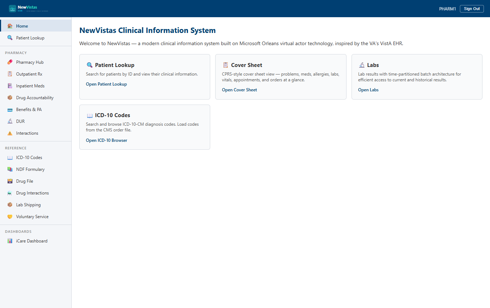

Manual › Pharmacist › Overview
Pharmacist Manual
Everything a pharmacist does in NewVistas — verifying and filling prescriptions, running Drug Utilization Review, processing controlled substances through EPCS, and adjudicating point-of-sale insurance claims — with step-by-step walkthroughs and screenshots. The pages here mirror the Pharmacy section you see in your sidebar after signing in.

In this manual
Getting StartedSign in, navigate, and pull up a patient.
Verify & FillVerify, fill, refill, hold, and discontinue prescriptions.
Drug Utilization ReviewScreen for duplicates, allergies, dose, and organ-function risks.
EPCSReceive, sign, and manage controlled-substance e-prescriptions.
POS ClaimsSubmit and adjudicate point-of-sale insurance claims.
Before you start
You'll need a pharmacist account (e.g.
PHARM1) and the system
running (SiloHost, WebServer, and the Blazor app). See
Getting Started.